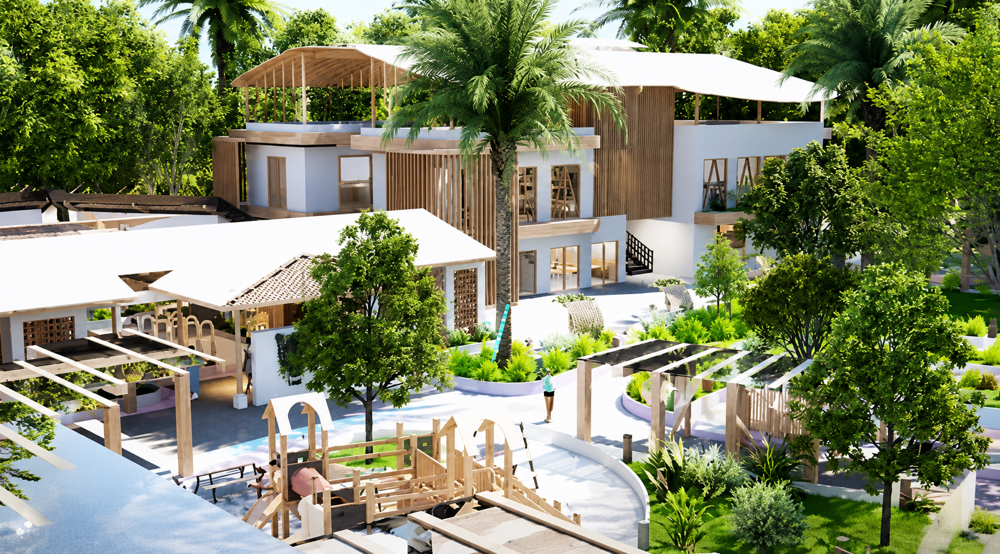

Charity CR
Actividades para niños y familias de la comunidad, realizadas junto a Charity CR.
Comunidad · Turismo · Desarrollo Integral
Trabajamos junto a la comunidad para impulsar el desarrollo turístico, deportivo y comunitario de Caño Negro.
Caño Negro, Los Chiles, Alajuela
Somos una asociación comunitaria que impulsa el desarrollo de Caño Negro junto a instituciones, organizaciones y personas voluntarias.
La Asociación de Desarrollo Integral de Caño Negro trabaja junto a la comunidad para impulsar iniciativas que contribuyan al desarrollo y bienestar de sus habitantes.
A través de la colaboración con instituciones, organizaciones, universidades y otros aliados, la ADI participa en proyectos relacionados con turismo, infraestructura, deporte, seguridad y participación comunitaria.
Entre las iniciativas desarrolladas destaca el Manakin Eco-Trail, así como diferentes acciones de mantenimiento y mejoramiento de espacios comunitarios.

Iniciativas y acciones en beneficio directo de la comunidad de Caño Negro.
Impulso de proyectos turísticos como el Manakin Eco-Trail.
Mantenimiento y mejoras en espacios e infraestructura comunitaria.
Apoyo a espacios y proyectos relacionados con el deporte y la recreación.
Voluntariado y espacios de participación para vecinos y vecinas.
Alianzas con instituciones, universidades, organizaciones y empresas.
La participación de las personas de la comunidad es clave para desarrollar actividades e iniciativas. Estas son algunas de las formas en que la comunidad se ha involucrado.
Actividades para niños y familias de la comunidad, realizadas junto a Charity CR.
Limpieza del Parque y del Campo Ferial junto a personas voluntarias de la comunidad.
Trabajo conjunto con diferentes organizaciones e instituciones en beneficio de Caño Negro.
Participación en actividades, capacitaciones e iniciativas relacionadas con proyectos comunitarios.
Dentro del plan de trabajo se contempla el desarrollo de un Programa de Voluntariado para fortalecer la participación comunitaria.
Estas son algunas de las acciones que hemos desarrollado junto a la comunidad, instituciones y organizaciones aliadas.
Desarrollo de una iniciativa turística junto a instituciones, organizaciones y universidades, con trabajo en el sendero y el Centro de Desarrollo Turístico y Empresarial.
CompletadoMantenimiento, limpieza, seguridad y mejoras de infraestructura en diferentes espacios de la comunidad.
CompletadoTrabajos de mantenimiento y mejoramiento del Campo Ferial.
CompletadoMejoras relacionadas con electricidad, tuberías y diferentes espacios comunitarios del sendero.
CompletadoTrabajo conjunto con Fuerza Pública y desarrollo de Mesas de Seguridad.
CompletadoTrabajo conjunto con universidades, instituciones, organizaciones y empresas aliadas.
CompletadoEl Plan de Trabajo contempla nuevas iniciativas para continuar impulsando el desarrollo de Caño Negro.

Es la Asociación de Desarrollo Integral de Caño Negro, una organización comunitaria sin fines de lucro.
Podés escribirnos por WhatsApp o correo y te contamos las formas activas de participar.
Las reuniones y actividades se coordinan según cada proyecto; contactanos para más información.
Se ubica en Los Chiles, Alajuela, Costa Rica, cerca de la frontera con Nicaragua.
Podés acceder por la Ruta 138 desde Upala o Los Chiles. Usá el botón de ubicación para ver la ruta.
Cambiando idioma...